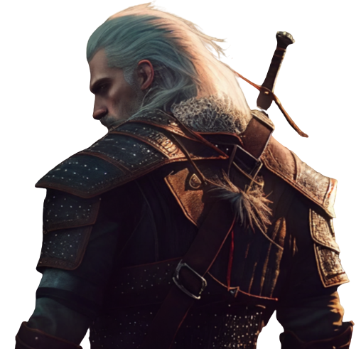

- ABOUT THE GAME
- CHARACTERS
- LOCATION
- REVIEW
- LET'S PLAY
THE WITCHER

In a war-torn world, wiht the Wild Hunt your back, you'll take on your most important contact - to track down the child of prophecy, a key and a weapon which can save or destroy all.
Location: Mill
Type: Abandoned village
Country: Temeria
Region: White Garden
Location: North of the White Garden